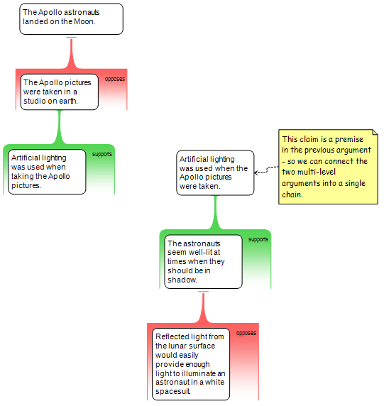

Argument Mapping: Terms
- claim
- an idea that somebody says is true
- contention
- a claim that is supported by evidence.
- reason
- evidence (supporting the claim)
- eg, a “grouping” of claims to prove contention
- A reason is just a set of claims, working together, to prove that, another claim is true.
- objection
- evidence that opposes the claim
- eg, a “grouping” of claims to disprove contention
- An objection is just a set of claims, working together, to prove that, another claim is false.
- evidence
- a set of claims, that work together, to prove that another claim is true or false.
- simple argument
- an argument that has
a single piece of evidence
bearing upon
a single contention.
- Also can be described as:
- a contention with
a single reason for it or,
a single objection against it.
- What makes an argument simple?
- It’s an argument that has
just one contention &
just one piece of evidence
- premise
- a claim inside of or part of
a reason or objection
- co-premise
- a claim inside of or part of
a reason or objection
that works with another claim (co-premise)
to prove the contention.
- hidden premise
- a co-premise that isn’t stated in a reason or objection
- multi-reason argument
- an argument that has
at least two distinct pieces of evidence
for the same contention
- For example…
- This is a multi-reason argument…
Can be two separate reasons…

it presents two separate reasons for the same contention
- This is a multi-reason argument…
Can be a reason and objection…

- This multi-reason argument is a dispute - there is evidence both for and against the conclusion.
- counter argument
- a simple argument that has
the same contention
as another simple argument
but opposing evidence.
- These are counter arguments…

- These are counter arguments…

- A counter-argument IS ALSO…
- an objection to a reason's contention, and/or vice versa.
- The things that are inside disputes
- dispute
- an argument that has
at least one reason for AND
at least one objection against,
the same contention
- A dispute is also…
- strange bedfellows
- two co-premises
mapped inside the same reason
that actually, belong in
different reasons
- stranded co-premise
- two co-premises
mapped inside different reasons
that actually belong in
the same reason
- multi-layer argument
- An argument where
one reason provides evidence in support of
another reason.
- A multi-layer argument is also
- an argument that has evidence for evidence
- An argument with
evidence that proves
other evidence
- An argument that has
layers of evidence
supporting other evidence
- an argument that provides evidence for other evidence
- An argument that has
reasons or objections
providing evidence for
other reasons or objections
- an argument in which there are reasons or objections bearing upon reasons or objections
- main contention
- the only contention
that is not also a premise
in another simple argument.
- eg…
- main reason
- the first and most important reason, at the top level, that seeks to provide evidence that the contention is true ▹▹
- secondary reason
- evidence that proves
a premise
in the primary reason
- function:
- the secondary reason
is a simple argument
- the secondary reason’s contention
is one of the premises
in the primary reason
- that means…
- a secondary reason provides support for / proves the primary reason
- main premise
- the first and most important claim in a reason or objection ▹▹
- supporting evidence
- a layer of evidence
that supports/proves
other evidence
- supporting evidence types
- reason for a reason
- a reason that supports another reason.
- function:
- Evidence that proves another reason
- The contention of a supporting reason
is a premise in upper reason.
- 2 simple arguments mapped separately

- Mapped as a single multi-layer argument
- reason for an objection
- a reason that supports an objection
- function:
- Evidence that backs up an objection
- provides evidence that the objection is a good one.
- rejoinder
- an objection to a reason
- function:
- provides evidence that a reason is not good evidence for the argument above it.

- 2 kinds of rejoinders
- first kind provides evidence that one of the claims (co-premises) in the reason is not true

- second kind provides evidence that the claims (co-premise(s), even if true, don't provide good evidence for their contention

- rebuttal
- an objection to an objection
- function:
- A rebuttal provides evidence that an objection is not a good objection
- eg. not good evidence against its contention.
- A rebuttal (if good) "cancels out" rather than supports the first objection.
- A rebuttal basically says "the first objection is not a good objection."
- chains of reasoning
- a multi-layer argument
with more than two layers
- a chain of reasoning is also…
- a multi-layer argument
- At least two simple arguments combined into a single, multi-level argument
- 2 Separate arguments

- 2 Separate arguments combined into one argument

- argument web
- an argument that is both
a multi-reason argument, and
a multi-layer argument.
- premise objection
- an objection to a
stated premise ▹▹
- inference objection
- an objection to
an unstated premise ▹▹
- Note…
- an inference objection is not aimed at any specific premise. ▹▹
- An inference objection is not aimed at a visible premise.
It is aimed at at a premise that has not yet been stated. ▹▹
- premise rebuttal
- an objection to
another stated objection
- Difference between a “premise objection” vs “premise rebuttal”?
- any objection to a premise is a premise objection ▹▹
- inference rebuttal
- an objection to
another, unstated objection
- 4 Kinds of multi-layer arguments
- reason for a reason,
- reason for an objection,
- rejoinder
- rebuttal
- support vs co-premise
- multi-layer arguments have multiple contentions
Misc
- a reason is made up of at least 2 distinct claims
- every reason and objection is made up of at least two distinct claims, known as co-premises
- In this passage, there is only 1 reason to believe… but there are 2 claims in that reason...
- In this passage, there is only one reason to believe the contention, but there are two distinct claims in that reason, i.e., two distinct premises.
- Eg, there is only one piece of “evidence”…
- EG, but there are two distinct claims in that ‘evidence’
- eg, there are two co-premises
- If both are true you have a ‘reason to believe’
- If both premises are true, you have a reason to believe the claim ️
- argument mapping
- Argument mapping is about making the reasoning explicit
- When you hide co-premises, you leave it up to your reader to figure it out.